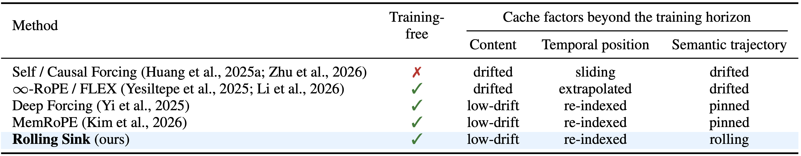

1UCSD 2Adobe
Autoregressive (AR) video diffusion models in the Self Forcing family generate a video chunk by chunk, each conditioned on the ones before it, so they can keep rolling out with no preset length. In practice they are trained on short, fixed clips (e.g., 5s). Once a rollout passes this training horizon, the cache fills with self-generated chunks the model never saw in training, and quality degrades: colors oversaturate, identities drift, structures collapse, and motion fades.
We frame this failure as a cache-behavior mismatch — a domain shift between the within-horizon caches seen in training and those produced by open-ended testing — and address it with Rolling Sink, a training-free inference-time cache policy. Within the base model's fixed cache budget, Rolling Sink holds the cache close to its stable within-horizon behavior: it restores low-drift content, sliding temporal indices, and evolving semantics, and keeps a small recent context. Attention sink and temporal re-indexing are existing mechanisms; our contribution is the mismatch formulation, the joint bounded-cache policy, and the Rolling Semantics schedule.
On two 5s-trained bases, Self Forcing and Causal Forcing, Rolling Sink attains the best averaged rank on VBench-Long at both 1- and 5-minute rollouts under the same inference setting, at about 0.56% throughput change, and holds GPU memory constant. It also sustains a 30-minute qualitative rollout, $360\times$ its training horizon.
Shot length in film is open-ended: a take may last seconds or run for minutes, like the 16.5-minute opening dialogue of Steve McQueen's Hunger or the minute-long tricycle shot in Kubrick's The Shining. This motivates open-ended generation, where the length is not fixed and the model must keep producing coherent frames for as long as asked.
Large video diffusion models (Sora, Wan, Kling, Veo, Gen) denoise all frames at once, which ties them to short, fixed clips and rules out this setting. AR video diffusion models in the Self Forcing family instead predict each chunk from previously generated ones, which lets them keep rolling out with no preset length. Within the training horizon they are stable, but once a rollout passes it they degrade fast.
The prompt embedding is fixed, and each chunk starts from the same noise distribution. The only input that changes across the rollout is thus the cache, i.e., the past self-generated chunks. Within the horizon, the cache stays in the training distribution and the model behaves as trained; beyond it, the cache falls outside that distribution, each prediction is biased, and the errors compound. Since limited-horizon training cannot cover open-ended lengths, the cache is the only test-time lever.
The cache enters the model through attention over its chunks, so each chunk contributes three factors the model reads: content, temporal position, and, across chunks, a semantic trajectory. Keeping the test cache in-distribution therefore means matching these three — ① low-drift content, ② sliding temporal indices, and ③ evolving semantics. Rolling Sink restores them in order, content first, under the bounded budget of $K$ chunks.



VBench-Long dimensions) rises as each cache behavior is added — Attention Sink, then Temporal Re-index, then Rolling Semantics — all above the no-sink-chunk base, at both 1- and 5-minute rollouts, and best at the default $S/K=5/6$.
We evaluate on VBench-Long over 1- and 5-minute rollouts (16 dimensions, averaged rank; lower is better), on two 5s-trained bases (Self Forcing, Causal Forcing) with cache budget $K=6$ and sink ratio $S/K=5/6$. Rolling Sink attains the best averaged rank in all groups, and its Self Forcing variant ranks first even against training-based baselines — including LongLive trained on 1-minute clips — while using no extra training and about 0.56% throughput change at constant GPU memory.
Comparison with training-free horizon-extension methods (Deep Forcing, ∞-RoPE, MemRoPE) on VBench-Long. Rolling Sink attains the best averaged rank on both 5s-trained bases. The Forward-only row isolates the schedule — the forward-reverse traversal beats simple cycling.


Comparison with training-based baselines, several trained on longer clips (6.5s for Rolling Forcing, 1 minute for LongLive).


VBench-Long dimensions tracked along the 5-minute trajectory. Baselines degrade or fluctuate as frames accumulate, whereas both Rolling Sink variants stay higher and flatter — keeping quality high while slowing drift.

@article{li2026rolling,
title={Rolling Sink: Bridging Limited-Horizon Training and Open-Ended Testing in Autoregressive Video Diffusion},
author={Li, Haodong and Liu, Shaoteng and Lin, Zhe and Chandraker, Manmohan},
journal={arXiv preprint arXiv:2602.07775},
year={2026}
}